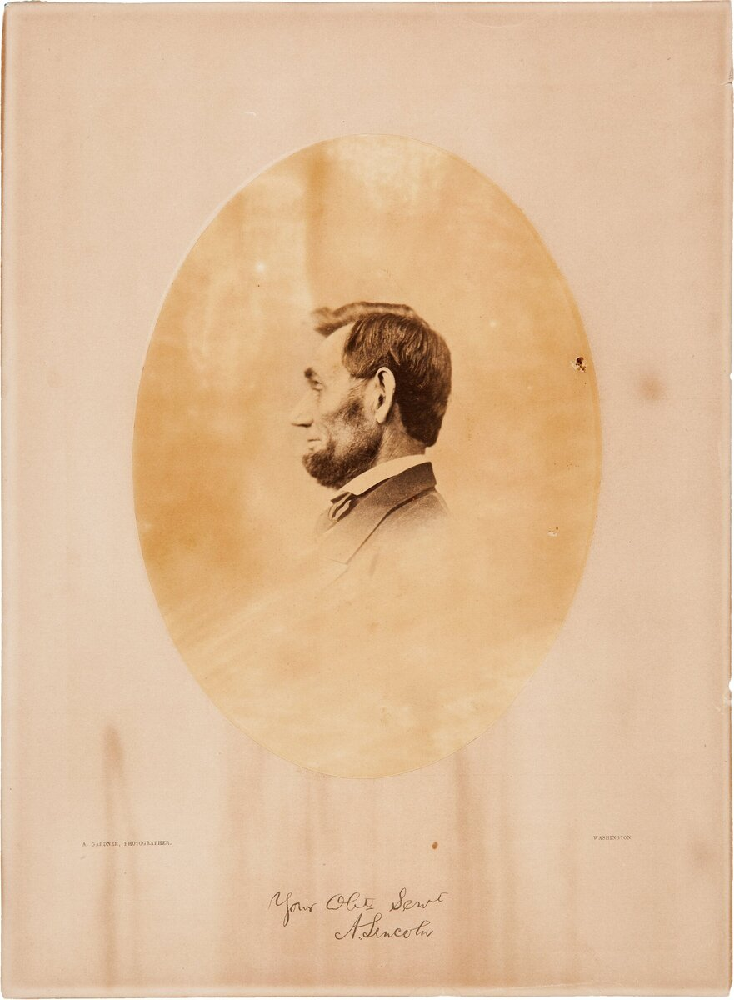
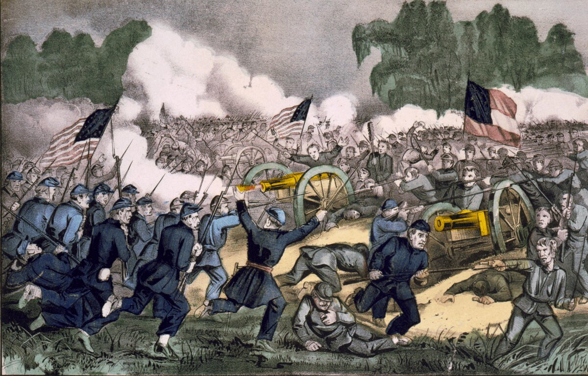

A1 · American History
Abraham Lincoln
A poor boy from a small wooden house, and the president who ended slavery.
Play the audio and follow along, then read it again on your own. Tap or hover over a highlighted word to see what it means.
Abraham Lincoln was born in 1809 in a small wooden house in Kentucky. The house had one room. The family was poor.
Lincoln went to school for less than one year. But he loved books. He read in the evening, next to the fire, after a long day of work.
He was very tall — one meter ninety-three. People remembered him for that, and for his quiet voice.

Lincoln worked as a lawyer. Then he went into politics, and in 1860 Americans chose him as president.
At that time, some states in the south had slavery. Black people there were not free. They worked for no money, and they were bought and sold.
Eleven southern states did not want Lincoln as president. They left the country, and a terrible war started. We call it the Civil War. It was Americans against Americans.

In 1863, in the middle of the war, Lincoln said that enslaved people in the southern states were free.
The war finished in April 1865. The United States was one country again. Later that year, a new law ended slavery everywhere in the country.
Five days later, a man shot Lincoln in a theater in Washington. The president died the next morning.
Today you can see Lincoln on the five-dollar bill, and in a big white building in Washington, D.C., where he sits in a chair and looks at the city.
Key Vocabulary
- poor with very little money
- a lawyer a person whose job is the law
- politics the work of government
- a state one of the fifty parts of the United States
- slavery a system where some people are owned by other people and work for no money
- the south the southern part of the country
- a civil war a war between two groups inside one country
- to shoot to fire a gun at somebody (past: shot)
- a bill a piece of paper money
Abraham Lincoln — A1 · American History · Renan the Teacher, English Language Academy · https://renangrossi.github.io/englishclasses/reading/a1/abraham-lincoln.html
Interactive Exercises
Practice
Complete each exercise, then click Submit to see your score and an explanation for every answer.
Speaking & Writing
Discussion
There are no right answers here — use these to practice speaking, or write a short answer to each.
- Lincoln read books after work every evening. When do you read or study?
- Why do you think Lincoln is on American money?
- Is there a person from your country's history that everybody knows? What did this person do?